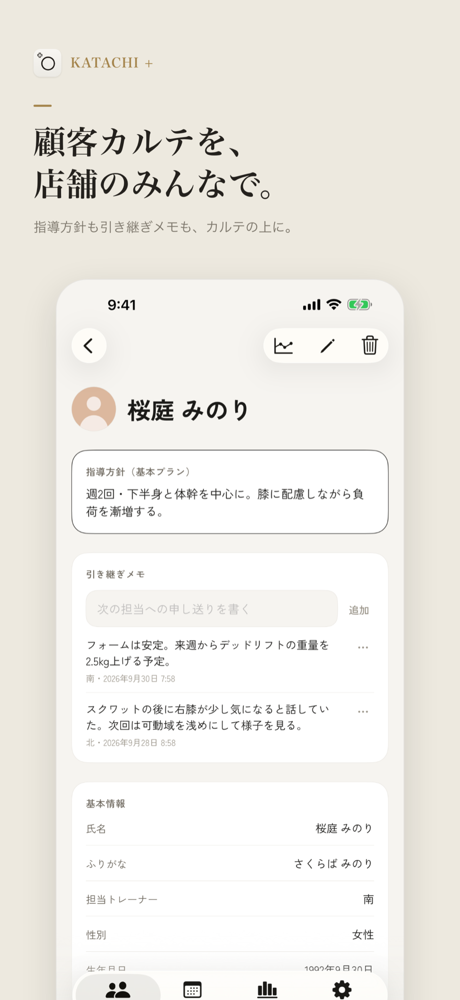
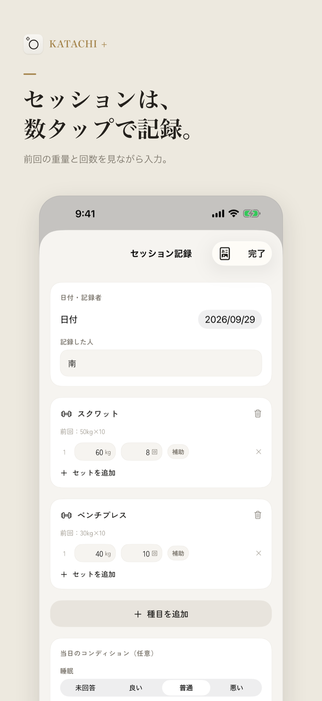
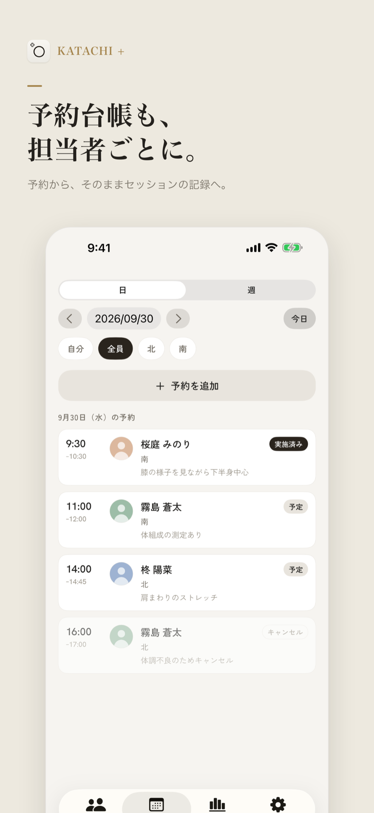
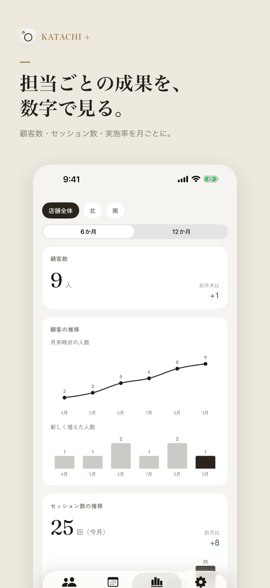

KATACHI + の使い方
はじめて使う方に向けて、店舗を作るところから、毎日の記録、店舗の管理までを順に説明します。アプリの中でも、「設定」タブの「使い方」からいつでも使い方ガイドを開けます。
- はじめる前に
- 最初の設定
- 店舗を作る（オーナー）
- スタッフを招待する（オーナー）
- 招待されて参加する（スタッフ）
- 顧客を登録する
- 同意書に署名してもらう
- セッションを記録する
- 予約台帳を使う
- 体の変化を残す・見る
- 顧客へのレポートを送る
- 分析を見る
- 書き出しとバックアップ（オーナー）
- アプリロックと端末ごとの設定
- スタッフを外す・店舗から抜ける
- ご契約について
- Mac で使うとき
- うまくいかないとき
1. はじめる前に
用意するものは次の3つです。
- iPhone・iPad（iOS 18 以上）か Mac（macOS 15 以上）
- iCloud にサインインした Apple アカウント。店舗をスタッフと共有するときに使います。店舗のデータは、オーナーの iCloud 容量を使います。
- 1人で使うなら無料。自分の店舗1つで、顧客5人まで記録できます。顧客を6人以上記録する・スタッフと共有するときはサブスクリプション（月額1,000円・年額10,000円）が、オーナーもスタッフも使う人それぞれに必要です。
2. 最初の設定
はじめてアプリを開くと、案内の画面が順に出ます。
- ようこそ：できることを確かめて「次へ」を押します。
- 同意：「利用規約を読む」「プライバシーポリシーを読む」で内容を確かめ、4つの項目すべてにチェックを入れて「同意して始める」を押します。
- iCloud の確認：「iCloud を使えます」と出れば準備はできています。「iCloud にサインインしていません」と出たら、設定アプリの上部の Apple アカウントでサインインし、「iCloud」をオンにしてから「もう一度確認」を押します。
- 使い方を選ぶ：自分で店舗を開くなら「自分の店舗を作る（持ち主）」、オーナーから招待されたなら「招待されて参加する（スタッフ）」を選びます。続きは 3 と 5 で説明します。
- ご契約のご案内：プランを選んで購入します。「あとで（見るだけで使う）」で先に進むこともできます。
- 「準備ができました」と出たら「はじめる」を押します。
iCloud が使えなくても先へ進めますが、店舗の共有はできません。この案内は、設定の「使い方」にある「オンボーディングをもう一度」で見直せます。
3. 店舗を作る（オーナー）
- 「店舗を作る」を選びます。最初の設定のほか、「顧客」タブ上部の店舗名のメニューにある「新しい店舗を作る」からも作れます。
- 業種を選びます。業種によって、種目、記録の入力欄、カウンセリングの質問が変わります。
- 「店舗名」を入れて「店舗を作る」を押します。
| 業種 | 記録すること |
|---|---|
| 筋トレ（パーソナルジム） | 重量×回数でセットを記録します。体組成や推定1RMのグラフも見られます。 |
| ピラティス | マシン・スプリング・回数を記録します。姿勢の変化を写真で見比べられます。 |
| ヨガ | ポーズごとに呼吸数・左右・バリエーションを記録します。 |
| ストレッチ | 部位ごとに保持時間と強さ、前後の柔軟性（cm）を記録します。 |
店舗を作ると、その業種でよく使う種目と、同意書のひな形が最初から入っています。業種はあとから設定の「業種」で変えられ、変えてもこれまでの記録や種目はそのまま残ります。
店舗を切り替える
「顧客」タブ上部の店舗名をタップすると、店舗の一覧が出ます。いくつかの店舗を持っている・参加しているときは、ここで切り替えます。「予約台帳」「分析」「設定」の各タブは、ここで選んだ店舗の内容になります。
4. スタッフを招待する（オーナー）
- 「設定」タブを開きます（Mac は左の「店舗設定」）。「店舗情報」の下に、招待の欄があります。
- 「メールアドレス」に、スタッフの Apple アカウントのメールアドレスを入れて「招待する」を押します。
- 「招待しました」と出たら、「招待を送る（LINE・メールなど）」で招待のリンクをスタッフに送ります。「リンクをコピー」でコピーして、自分で貼り付けて送ることもできます。
- スタッフが参加すると、「メンバー」の一覧で「参加済み」と表示されます。
5. 招待されて参加する（スタッフ）
- App Store で KATACHI + を入れ、最初の設定を進めます。使い方は「招待されて参加する（スタッフ）」を選びます。
- iPhone・iPad：オーナーから届いたリンクをタップすると、そのまま参加できます。
- リンクを開いてもアプリが開かないとき（Mac など）：リンクをコピーしてから、アプリの「招待されて参加する」で貼り付けボタンを押します。「リンクを入力する」から手で入れることもできます。
- 「（店舗名）に参加しました」と出れば完了です。参加した店舗が開きます。
参加するには、スタッフ自身のご契約が必要です。ご契約の前にリンクを開いたときはプランの画面が出て、購入が済むと自動で参加します。
6. 顧客を登録する
- 「顧客」タブの「顧客を追加」を押します。
- はじめてのときは、「自分の担当名」を入れて「設定して使う」を押しておきます。顧客一覧を自分の担当だけに絞り込めるようになります。
- 「氏名」を入れます。必須はこれだけで、ほかの項目はあとから入れても構いません。
- 右上の「追加」で保存します。
入れられる項目
| 基本情報 | 顔写真、氏名、ふりがな、担当トレーナー、性別、生年月日、電話、メール |
|---|---|
| 目的・指導方針 | 目的（業種ごとの候補から選べます）、指導方針（基本プラン） |
| カウンセリング | 数値目標、気になる部位（人体図）、普段の運動、運動歴、食生活の概要。ピラティス・ヨガ・ストレッチの店舗では、業種ごとの質問も加わります。 |
| 次回予定（メモ） | 次回予定日と次回担当のメモです。予約台帳とは別のものです。 |
| 配慮事項・メモ | 自由に書けます。 |
「気になる部位」は、正面と背面の人体図で部位をタップして選びます。もう一度タップすると外れます。
カルテ（顧客の詳細）の見方
一覧の顧客をタップすると、カルテが開きます。いちばん上に「指導方針（基本プラン）」、その下に「引き継ぎメモ」が並ぶので、担当が替わっても方針がすぐに分かります。引き継ぎメモは「次の担当への申し送りを書く」に書いて「追加」を押します。書いた人と日時が残り、店舗のスタッフ全員が見られます。

7. 同意書に署名してもらう
- カルテの「同意書」で「同意書に署名」を押します。
- 同意書の内容を顧客に確かめてもらい、署名欄に指か Apple Pencil で署名してもらいます。「1画戻す」「書き直す」でやり直せます。
- 「確定」を押すと PDF になり、カルテに保存されます。
保存した同意書はタップすると開き、「共有」から送ったり保存したりできます（Mac は「印刷」「書き出す」）。署名は iPhone か iPad で行ってください。
同意書の文面は、設定の「同意書」にある「同意書テンプレート」で、店舗に合わせて直せます。最初に入っているのはひな形なので、使う前に一度目を通してください。本文の {店舗名} と {店舗の連絡先} は、署名のときに自動で差し込まれます。連絡先は、設定の店舗情報で入れておきます。
8. セッションを記録する
- カルテの「セッション」で「記録を追加」を押します。メニューの型を作ってあれば、「型から始める」も使えます。
- 「種目を追加」で種目を選びます。前に同じ種目を記録していれば、「前回：60kg×10 ・ 60kg×8」のように前回の内容が出ます。
- 「セットを追加」でセットを足します。直前のセットと同じ値が入った状態で増えるので、同じ重量・回数なら数字を直す必要はありません。
- 終わったら「完了」を押します。入力するたびに自動で保存されるので、保存ボタンはありません。

記録の日付は、記録を始めた日になります。過去の分を入れるときは、記録画面の上の「日付」を変えてください。
業種ごとの入力欄
| 筋トレ | 重量（kg）・回数・補助。有酸素の種目は km/h・分・% を入れます。 |
|---|---|
| ピラティス | 回数、スプリング（メーカーと色）、左右、調整 |
| ヨガ | 呼吸数（または秒）、左右、バリエーション・プロップス |
| ストレッチ | 保持（秒）、方法（静的・動的・PNF・パートナー）、左右、強さ（0〜10） |
ピラティス・ヨガ・ストレッチでは、種目を追加すると1行目が入り、「記録を追加」で行を足します。
当日のコンディション
記録画面の下の「当日のコンディション（任意）」で、睡眠・疲労などの調子と、ひとことを残せます。入れた項目は、顧客へのレポートにも載ります。
メニューの型と種目を整える
よく行うメニューは、設定の「記録・担当の設定」にある「メニューの型」で、「追加」から型にしておけます。型の名前を付け、種目を行う順にタップして選びます。型に入るのは種目の並びだけで、重量や回数はその日に入れます。
種目の追加・並べ替え・非表示は、同じ「記録・担当の設定」の「種目ライブラリ」で行えます。
9. 予約台帳を使う
LINE や電話、外部の予約サービスで受けた予約を、店舗のみんなで記録する台帳です。顧客が自分で予約する機能や、顧客への通知はありません。
- 「予約台帳」タブで「予約を追加」を押します。
- 「顧客を選ぶ」で顧客を選び、開始の日時と所要時間（30分〜120分、または「その他」）を選びます。担当には、顧客の担当トレーナーが自動で入ります。
- 必要ならメモ（例：LINE で受付・初回体験）を入れて、「追加」を押します。
上部で「日」「週」の表示を切り替え、担当の並びで「全員」や担当者ごとに絞り込めます。同じ担当の予約と時間が重なると知らせますが、そのまま保存することもできます。

予約からセッションを記録する
予約をタップして開き、「セッションを記録」を押すと、予約の日時でセッションが作られ、予約が「実施済み」になって記録画面が開きます。予約を長押しして選ぶこともできます。予約の状態は「予定」「実施済み」「キャンセル」「無断キャンセル」から選べ、分析の実施率に使われます。
予約ページのリンクを顧客に送る
Google カレンダーの予約ページ・STORES 予約・RESERVA などを使っているときは、設定の店舗情報にある「予約ページのリンク（任意）」に登録しておくと、予約台帳の上部に送るボタンが出て、顧客にリンクを送れます。
10. 体の変化を残す・見る
体組成・周径
カルテの「体組成・周径」で「測定を追加」を押し、体重・体脂肪率、周径（胸・ウエスト・ヒップ・太もも・二の腕）を入れます。セッションの前と後に柔軟性（cm）を測って残すこともできます。入力欄の横には、前回の値が出ます。
ヨガ・ストレッチの店舗では、最初は体組成・周径が表示されず、「柔軟性チェック」になっています。使いたいときは、設定の「業種」で「体組成・周径を表示する」をオンにします。
姿勢写真
カルテの「姿勢写真」で「写真を追加」を押し、向き（正面・側面・背面）を選んで、撮影するかライブラリから選びます。写真が2枚以上になると「比較」が出て、同じ向きの写真を前と後で並べ、格子線を重ねて見比べられます。
グラフ
カルテ右上のグラフのボタン（Mac はカルテの中の「グラフ」）で、推移を見られます。体重・体脂肪率のほか、筋トレは種目別の推定1RMとボリューム、ピラティスは回数、ヨガ・ストレッチは保持の推移、柔軟性の記録があればその推移も出ます。推定値は目安です。
11. 顧客へのレポートを送る
- セッション記録の右上の「レポート」を押します。カルテのセッションを長押しして「顧客へのレポートを作成」を選んでも開けます。
- 必要なら「トレーナーからのコメント（任意）」を書きます。下に、できあがりの PDF が表示されます。
- 「共有」から、LINE・メール・AirDrop などで顧客に送ります（Mac は「印刷」「書き出す」）。
レポートには、その日の記録、当日のコンディション、最近の推移が入ります。コメントは保存されず、そのレポートにだけ入ります。レポートはご契約がないあいだも作れます。
12. 分析を見る
「分析」タブで、顧客数、セッション数、予約数と実施率・キャンセルを、月ごとに見られます。上部で「店舗全体」と担当者を切り替え、期間は「6か月」「12か月」から選べます。店舗全体のときは、「担当者ごと」の表も出ます。
実施率は、実施済み ÷（実施済み＋無断キャンセル）で計算しています。

13. 書き出しとバックアップ（オーナー）
どれも設定の「データの書き出し」と、その下のバックアップの欄から行います。
- CSV で書き出す：「顧客を CSV で書き出す」「セッションを CSV で書き出す」。Excel で開けます。
- CSV から取り込む：「取り込み用のひな形（CSV）」に記入して、「顧客を CSV から取り込む」を押します。取り込む前に、件数と先頭の5行を確かめられます。追加のみで、いまいる顧客は上書きしません。氏名と電話が同じ人は、重複として飛ばします。UTF-8 と Shift_JIS の CSV を読めます。ひな形の1行目は見本なので、消してから使ってください。
- 自動バックアップ：自分がオーナーの店舗は、この端末に1日1回まで自動で控えを残します（新しい7つまで）。iCloud の同期とは別の控えです。
- ファイルに書き出す：「バックアップを書き出す」で、好きな場所に保存できます。自動バックアップは端末の中にあるので、別の場所にも残しておくと安心です。
- 復元：「バックアップから復元」でファイルを選ぶか、自動バックアップの一覧の「復元」を押します。復元は「店舗名（復元 日付）」という新しい店舗として作られ、いまの店舗には手を加えません。
- 書き出し履歴：CSV・PDF・バックアップを書き出した記録です。スタッフの書き出しも残ります。
14. アプリロックと端末ごとの設定
アプリロックは最初からオンです。アプリを開くときと、アプリから離れて設定した時間（すぐに・1分・5分・15分）が過ぎたあとに、Face ID・Touch ID・パスコードで確かめます。設定の「この端末」で変えられます。
同じ「この端末」で、自分の担当名と表示（システム・ライト・ダーク）も変えられます。担当名は、顧客一覧の「自分」の絞り込み、記録した人、予約の担当に使われます。Mac では、これらは「設定」ウインドウ（⌘,）にあります。
15. スタッフを外す・店舗から抜ける
- オーナー：設定の「メンバー」で、外す人の「外す」を押します。押す前に相手を確かめてください。外れたスタッフの端末からは、次にアプリを開いたときに店舗の記録が消えます。すでに書き出した PDF などは残ります。
- スタッフ：設定の下の「この店舗から抜ける」を押します。この端末から店舗のデータが消えます。オーナー側のデータは消えません。
16. ご契約について
- 設定の「ご契約」で、状態の確認、「プランを見る」「購入を復元」「サブスクリプションを管理」ができます。機種を変えたときは「購入を復元」を押してください。
- 解約は「サブスクリプションを管理」か、App Store のアカウント設定から行います。期間が終わる24時間以上前に解約しない限り、自動で更新されます。
- ご契約が終わっても、閲覧と書き出し（CSV、顧客へのレポート、同意書の PDF、バックアップ）は続けて使えます。スタッフと共有している店舗や顧客が6人以上いる店舗では、記録や編集、予約の追加、スタッフの招待などが止まります（無料の範囲の店舗は、そのまま記録できます）。
17. Mac で使うとき
左の列に「顧客」「予約台帳」「分析」「店舗設定」が並びます。ご契約や「この端末」の設定は、「設定」ウインドウ（⌘,）にあります。
| ⌘N | 顧客を追加 |
|---|---|
| ⇧⌘N | セッションを始める |
| ⌘E | 顧客を編集 |
| ⌘F | 検索 |
| ⌘1〜⌘4 | 左の列の切り替え |
セッション記録では、Return か Tab で 重量 → 回数 → 次のセット と進み、最後の回数で Return を押すと新しいセットが足されます。写真は Finder からドロップして入れられます。同意書の署名は、iPhone か iPad で行ってください。
18. うまくいかないとき
「このリンクに招待されていません」と出ます
オーナーが招待に使ったメールアドレスが、あなたの Apple アカウントのものと違う可能性があります。iPhone の設定アプリ上部の Apple アカウントでメールアドレスを確かめ、そのアドレスでオーナーに招待し直してもらってください。
招待のリンクを開いてもアプリが開きません
Mac などでは、リンクを開いてもアプリが開かないことがあります。リンクをコピーしてから、アプリの「招待されて参加する」で貼り付けボタンを押してください。
ほかの端末に変更がすぐ反映されません
数十秒待つか、アプリを開き直してください。両方の端末で iCloud にサインインしているかも確かめてください。
2台目の端末に店舗が出てきません
1台目と同じ Apple アカウントで iCloud にサインインしているかを確かめ、少し待ってからアプリを開き直してください。店舗がないと思って新しく作ると、店舗が二つになってしまいます。
登録した顧客が一覧に出てきません
顧客一覧の上の担当の並びが「自分」になっていると、自分が担当の顧客だけが表示されます。「全員」を選ぶか、顧客の「担当トレーナー」に自分の名前を設定してください。
購入したのに店舗を作れません
購入が終わると、プランの画面は自動で閉じます。もう一度「店舗を作る」（または「招待されて参加する」）を押してください。それでも未契約と表示されるときは、設定の「ご契約」で「購入を復元」を押してください。
iCloud にサインインしていないと出ます
設定アプリを開き、上部の Apple アカウントでサインインして、「iCloud」をオンにしてください。iCloud が使えないと、店舗の共有はできません。
解決しないときは、サポート か pohoda.inc@gmail.com までお知らせください。
料金やプライバシーについては KATACHI + の紹介ページ をご覧ください。